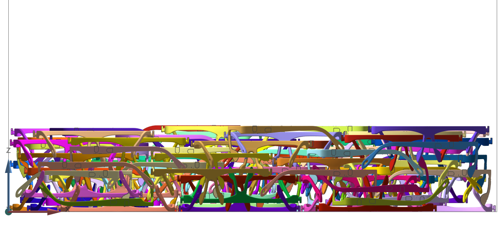
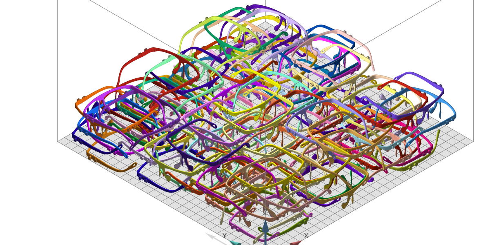
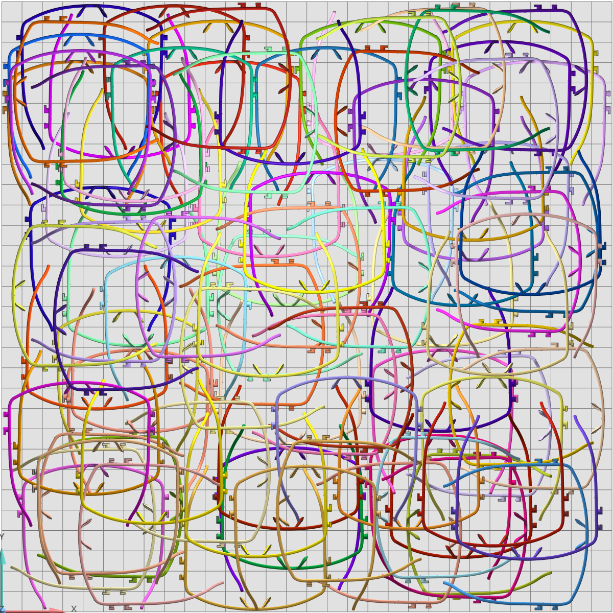

The Swiss Army Knife of 3D Nesting

This is a video I recorded of my 3D nesting algorithm.
Why 3D Nesting Matters
Additive manufacturing (AM), also known as 3D printing, refers to a set of technologies that allow the production of highly complex parts in an incremental layer-by-layer material deposition process. Powder-based Additive manufacturing (AM) machines, Selective Laser Sintering (SLS), and Multi Jet Fusion are able to print multiple parts in a build volume at the same time.
3D Nesting (a.k.a “Packing”) is the process by which a collection of 3D files are sorted, oriented and arranged in 3D space to minimize their combined bounding box volume. Efficient nesting of multiple parts can significantly reduce unit cost and cycle time in additive manufacturing (AM).
For the above reason, we developed an advanced 3D nesting (3D packing) function in our software. Moreover, in the past two months, we have optimized this algorithm, which has greatly improved the nesting speed and density.
How It Works
VD’s Nesting algorithm is built to minimize the z-height of the batch, allows user to set part interval, margin to platform sides, limited platform height, parts rotation and so on.
Part interval: In order to avoid fusing your parts together in the printing process, part interval between all of the components in your 3D file is required to be considered. Small part interval increases the risk of your parts being fused together while large part interval leads to more space needed resulting in waste of material and time.
VD allows users to set part interval freely. An experienced engineer can weigh and select the most suitable part interval.
Rotation setting: The orientation of each part in the 3D printing platform has a great influence on the final product surface quality. For example, rounded parts are frequently placed on the X and Y axes to avoid warpage.
VD allows users to set Z-Rotation steps. It defines how many options you have when rotating the part along the z-axis. The more steps you have, the more options and the higher the density you will reach. VD also allows users to set whether to rotate parts around X-axis or Y-axis.
The test case and results
We nested 100 identical glasses models in a 3D printing platform with a size of 600mm600mm400mm. Each model has 125544 vertices and 251092 triangles. The maximal used platform height is 106.168mm. This experiment was run on a 3.00GHz Intel Core i7 PC with 16Gb RAM and it only took 8 seconds.



Lawliet Wang
Head ofR&D & Co-founder of VD
My research interests include geometry processing, 2D/3D nesting and Shanghai sign language.